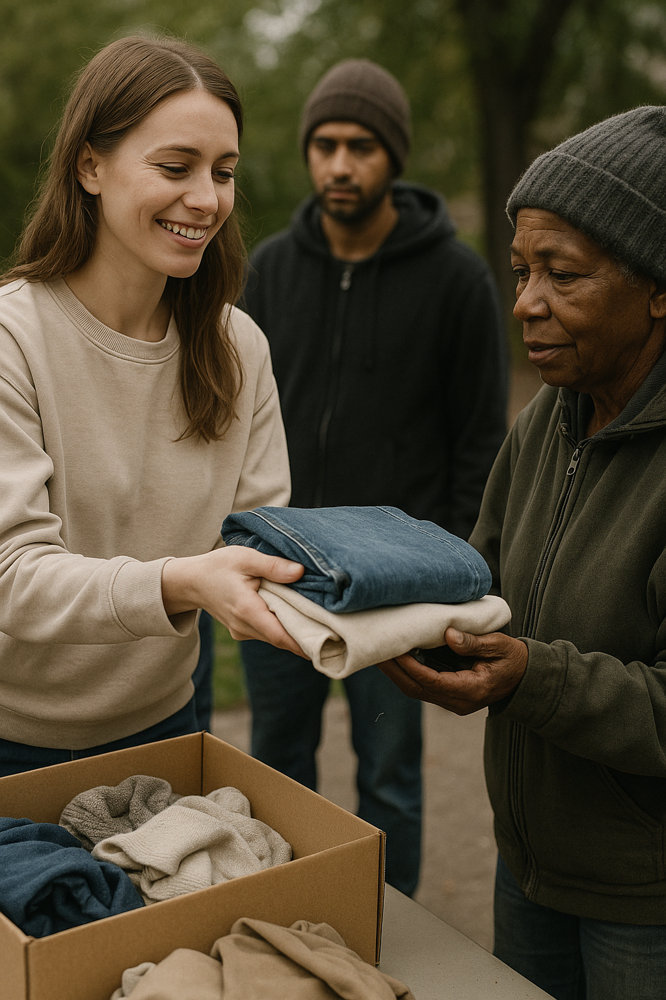
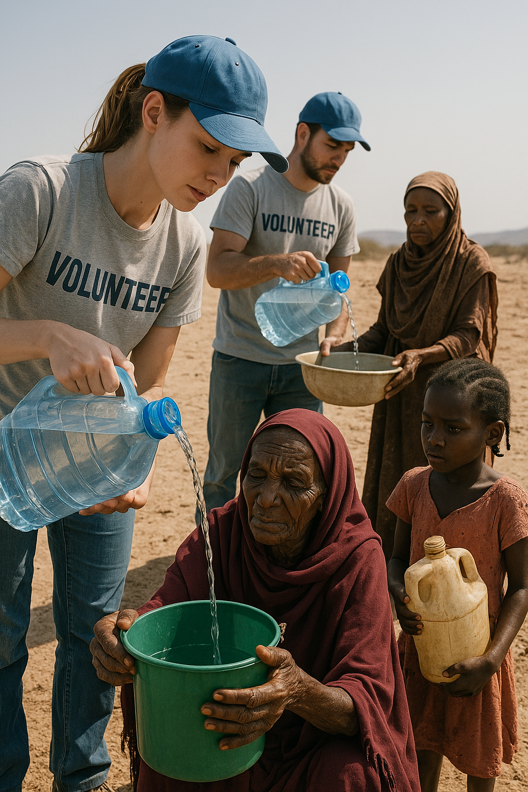
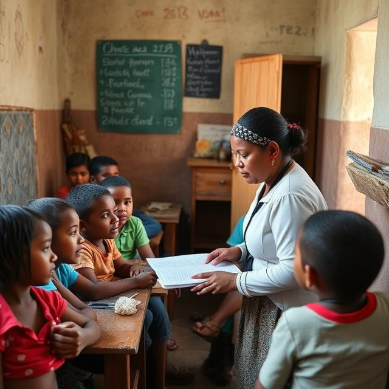

Our initiatives in action

A kind-hearted volunteer handing out food to people in need — a small act of compassion making a big difference.

Distributing warm clothes to those in need — spreading warmth and dignity with every item handed over.

Volunteers ensuring access to clean drinking water in drought-affected regions, bringing hope and health to communities

A dedicated teacher bringing education and opportunity to underprivileged children in a humble classroom setting.